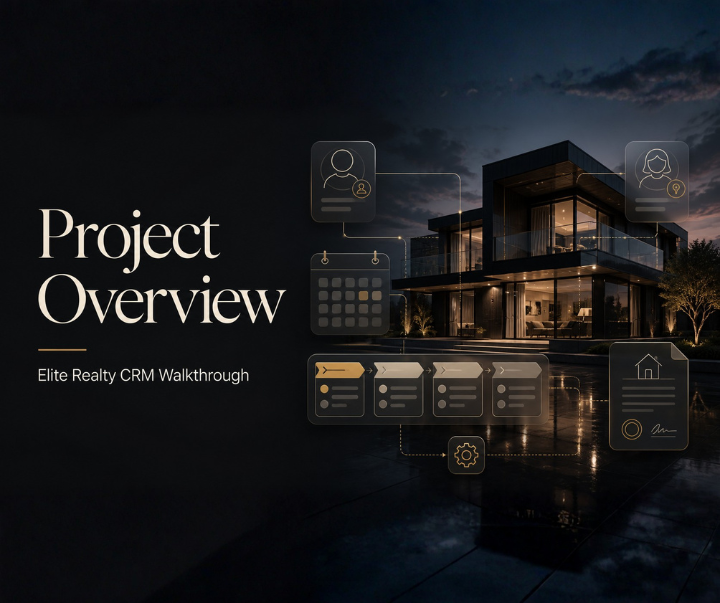

Business Diagnosis & Growth Strategy
Review the offer, positioning, lead sources, conversion path, sales process, and delivery bottlenecks to identify the real constraint.
Explore the real problem ↗Business Systems Architect & Growth Solutions Partner
I help business owners uncover what is actually holding growth back, map the right customer journey and operating system, then execute focused solutions across positioning, lead generation, CRM, funnels, automation, and AI.
I do not begin by prescribing another funnel, CRM, or automation. I first understand the offer, audience, acquisition, sales process, operations, and current constraints—then recommend the highest-impact path forward.
Review the offer, positioning, lead sources, conversion path, sales process, and delivery bottlenecks to identify the real constraint.
Explore the real problem ↗Map how attention becomes a lead, a conversation, a customer, and a repeatable operational journey before choosing the tools.
Map the right solution ↗Organize pipelines, appointments, lead handling, team ownership, follow-up, reporting, and handoffs around the way the business works.
Organize the operation ↗Execute the recommended mix of funnels, CRM, workflows, AI communication, integrations, testing, and optimization—only where they solve a defined problem.
Execute with purpose ↗A closer look at the systems I build—from intake, scheduling, and lead organization to full customer journeys and automated follow-up.
Intended outcome: Designed to reduce manual coordination and create a smoother patient journey.

Intended outcome: Designed to give agents clearer pipeline visibility and more consistent lead follow-up.

Elevate Academy is a fictional online coaching and course business that I created to demonstrate a complete customer journey inside GoHighLevel.
Intended outcome: Designed to demonstrate how one connected GoHighLevel system can organize the complete coaching and course customer journey.
Browse a selection of landing pages and multi-step funnel concepts created for different industries, audiences, and conversion goals. Drag the row to explore each project.
Use the previous and next controls, arrow keys, or drag the carousel to browse funnel projects.
There is no one-size-fits-all package. Every engagement starts by understanding the business, finding the highest-impact constraint, and defining the right scope before anything is built.
For owners who know something is not working but need clarity before investing in another tactic or tool.
Outcome: A clearer view of the real problem and where attention should go first.
For businesses that need a connected plan across acquisition, conversion, sales, onboarding, service delivery, and retention.
Outcome: A practical blueprint that connects the business problem to the right solution.
For businesses ready to implement the agreed solution and improve how leads, customers, information, and teams move.
Outcome: A tested system built around a defined business need—not technology for technology’s sake.
Scope and investment are recommended only after the business problem, priorities, and desired outcome are understood.
AI communication and compliant business messaging can strengthen the customer journey—but only when they address a clear service, response-time, qualification, or follow-up problem.
Availability, scope, and third-party costs depend on the business requirements, usage, platform setup, and recommended solution.
Add an AI-powered chatbot that can answer common questions, qualify leads, collect contact information, recommend the next step, and guide visitors toward booking or submitting a form.
Service businesses, clinics, agencies, coaches, and companies receiving frequent website or social-media inquiries.
Add an AI voice assistant that can answer incoming calls, handle basic inquiries, collect caller details, qualify opportunities, and guide callers toward booking or follow-up.
Businesses that miss calls, receive inquiries outside working hours, or need additional front-desk support.
Get assistance preparing and submitting the business information required for A2P 10DLC registration so your GoHighLevel account can send compliant business text messages in the United States.
Businesses using GoHighLevel for appointment reminders, lead follow-up, confirmations, promotions, and other SMS communication.
The goal is not to add more software. It is to create a clear, visible, and repeatable way for the business to attract, convert, serve, and retain customers.
Have an existing business process that feels disconnected or underperforming?
Find the Real ConstraintUnderstand the business model, goals, offer, audience, acquisition, sales process, operations, and symptoms behind the request.
Identify the highest-impact constraint and design a practical path across strategy, customer journey, people, process, and technology.
Build the agreed solution, connect the important journeys, and test the experience from both the customer and business side.
Review what the system reveals, document the process, and refine the next priority instead of adding unnecessary complexity.
I’m Pat Badiola, a Business Systems Architect and Growth Solutions Partner based in the Philippines and available for remote collaboration. I help business owners move beyond disconnected tactics by first understanding how the business attracts leads, converts opportunities, serves customers, and delivers value.
I do not assume that another funnel, CRM, or automation is automatically the answer. A conversion problem may come from traffic quality, offer positioning, messaging, design, follow-up, or the sales process itself. I diagnose the situation, map the right intervention, then execute the systems and experiences that support the business goal.
You do not need to arrive with the perfect solution in mind. Tell me what the business is trying to achieve, where the journey feels stuck, and what you have already tried. We can begin by understanding the problem together.
To make our first conversation useful, it helps to share:
WhatsApp will open with the message already prepared. Review it, add any useful context, and press send.
Let’s begin with the problem, identify the highest-impact opportunity, and decide what is worth building—or fixing—next.